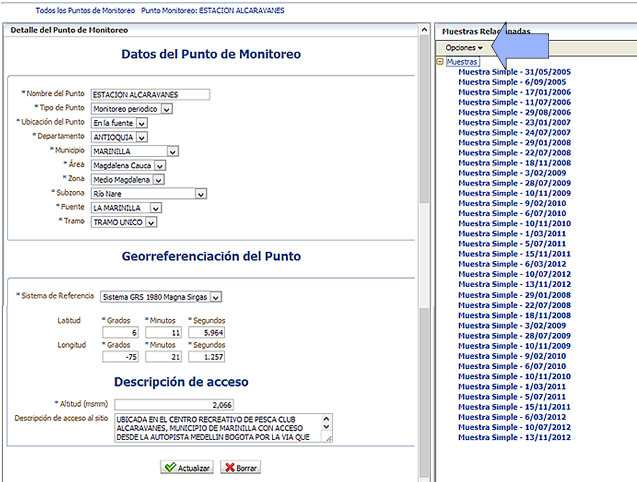

Este formulario le permite actualizar los datos del Punto de monitoreo y realizar la gestión de sus muestras. Observe que en el panel derecho, a través del menú "Opciones" usted podrá asociar la información de todas las muestras levantadas por la Corporación.

Realice los cambios que considere pertinentes y de clic en el botón "Actualizar". El sistema le presentará un mensaje indicando el éxito de la operación.
Desde esta sección usted podrá adicionar las muestras realizadas para este punto.